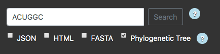
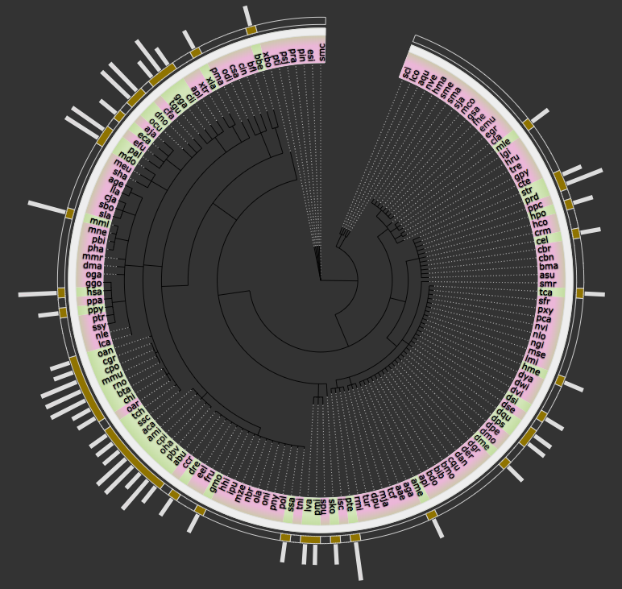
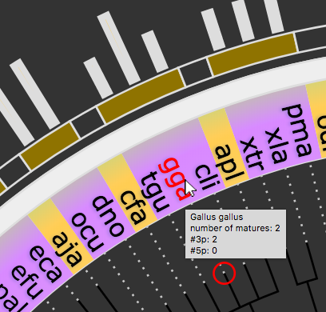
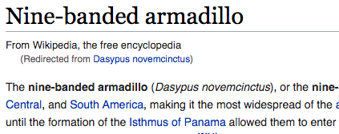

Let's say you are interested in exploring the seed sequence: ACUGGC.
All you have to do is enter the sequence in the input text field, check the
relevant output boxes, and click "Search".

the result:

for each relevant organism, hover the abbreviation (in this case: 'dno') to see full name and
number of matures containing the seed sequence you have entered:

By clicking on the abbreviation, you will be redirected to the wikipedia entry of the organism:

Download the graph as an SVG image by clicking the Download button.
(the download option exists for all output types)